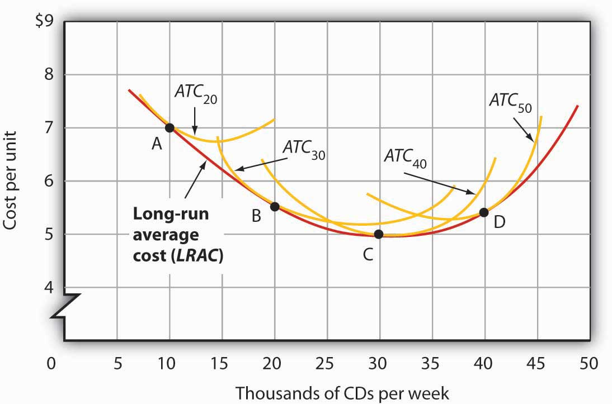
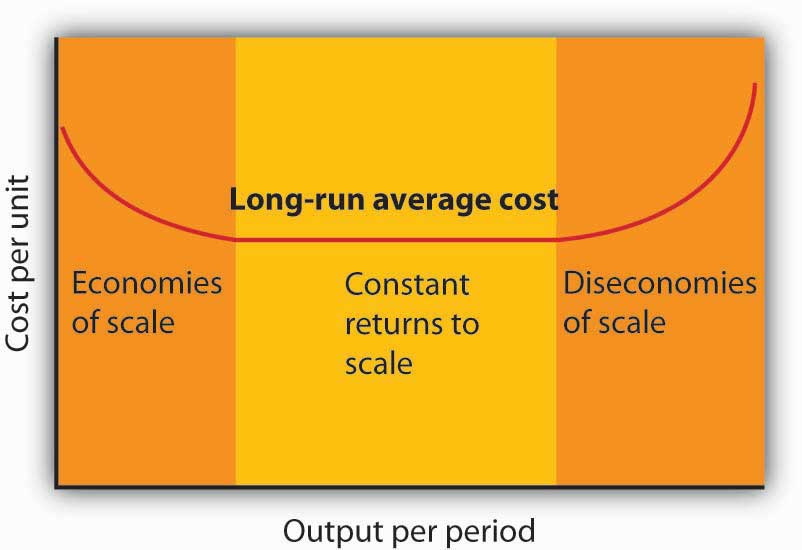

In a long-run planning perspective, a firm can consider changing the quantities of all its factors of production. That gives the firm opportunities it does not have in the short run. First, the firm can select the mix of factors it wishes to use. Should it choose a production process with lots of labor and not much capital, like the street sweepers in China? Or should it select a process that uses a great deal of capital and relatively little labor, like street sweepers in the United States? The second thing the firm can select is the scale (or overall size) of its operations. In the short run, a firm can increase output only by increasing its use of a variable factor. But in the long run, all factors are variable, so the firm can expand the use of all of its factors of production. The question facing the firm in the long run is: How much of an expansion or contraction in the scale of its operations should it undertake? Alternatively, it could choose to go out of business.
In its long-run planning, the firm not only regards all factors as variable, but it regards all costs as variable as well. There are no fixed costs in the long run. Because all costs are variable, the structure of costs in the long run differs somewhat from what we saw in the short run.
How shall a firm decide what mix of capital, labor, and other factors to use? We can apply the marginal decision rule to answer this question.
Suppose a firm uses capital and labor to produce a particular good. It must determine how to produce the good and the quantity it should produce. We address the question of how much the firm should produce in subsequent chapters, but certainly the firm will want to produce whatever quantity it chooses at as low a cost as possible. Another way of putting that goal is to say that the firm seeks the maximum output possible at every level of total cost.
At any level of total cost, the firm can vary its factor mix. It could, for example, substitute labor for capital in a way that leaves its total cost unchanged. In terms of the marginal decision rule, we can think of the firm as considering whether to spend an additional $1 on one factor, hence $1 less on another. The marginal decision rule says that a firm will shift spending among factors as long as the marginal benefit of such a shift exceeds the marginal cost.
What is the marginal benefit, say, of an additional $1 spent on capital? An additional unit of capital produces the marginal product of capital. To determine the marginal benefit of $1 spent on capital, we divide capital’s marginal product by its price: MPK/PK. The price of capital is the “rent” paid for the use of a unit of capital for a given period. If the firm already owns the capital, then this rent is an opportunity cost; it represents the return the firm could get by renting the capital to another user or by selling it and earning interest on the money thus gained.
If capital and labor are the only factors, then spending an additional $1 on capital while holding total cost constant means taking $1 out of labor. The cost of that action will be the output lost from cutting back $1 worth of labor. That cost equals the ratio of the marginal product of labor to the price of labor, MPL/PL, where the price of labor is the wage.
Suppose that a firm’s marginal product of labor is 15 and the price of labor is $5 per unit; the firm gains 3 units of output by spending an additional $1 on labor. Suppose further that the marginal product of capital is 50 and the price of capital is $50 per unit, so the firm would lose 1 unit of output by spending $1 less on capital.
The firm achieves a net gain of 2 units of output, without any change in cost, by transferring $1 from capital to labor. It will continue to transfer funds from capital to labor as long as it gains more output from the additional labor than it loses in output by reducing capital. As the firm shifts spending in this fashion, however, the marginal product of labor will fall and the marginal product of capital will rise. At some point, the ratios of marginal product to price will be equal for the two factors. At this point, the firm will obtain the maximum output possible for a given total cost:
Equation 8.9
Suppose that a firm that uses capital and labor is satisfying Equation 8.9 when suddenly the price of labor rises. At the current usage levels of the factors, a higher price of labor (PL′) lowers the ratio of the marginal product of labor to the price of labor:
The firm will shift funds out of labor and into capital. It will continue to shift from labor to capital until the ratios of marginal product to price are equal for the two factors. In general, a profit-maximizing firm will seek a combination of factors such that
Equation 8.10
When a firm satisfies the condition given in Equation 8.10 for efficient use, it produces the greatest possible output for a given cost. To put it another way, the firm achieves the lowest possible cost for a given level of output.
As the price of labor rises, the firm will shift to a factor mix that uses relatively more capital and relatively less labor. As a firm increases its ratio of capital to labor, we say it is becoming more capital intensiveSituation in which a firm has a high ratio of capital to labor.. A lower price for labor will lead the firm to use relatively more labor and less capital, reducing its ratio of capital to labor. As a firm reduces its ratio of capital to labor, we say it is becoming more labor intensiveSituation in which a firm has a high ratio of labor to capital.. The notions of labor-intensive and capital-intensive production are purely relative; they imply only that a firm has a higher or lower ratio of capital to labor.
Sometimes economists speak of labor-intensive versus capital-intensive countries in the same manner. One implication of the marginal decision rule for factor use is that firms in countries where labor is relatively expensive, such as the United States, will use capital-intensive production methods. Less developed countries, where labor is relatively cheap, will use labor-intensive methods.
Now that we understand how to apply the marginal decision rule to the problem of choosing the mix of factors, we can answer the question that began this chapter: Why does the United States employ a capital-intensive production process to clean streets while China chooses a labor-intensive process? Given that the same technology—know-how—is available, both countries could, after all, use the same production process. Suppose for a moment that the relative prices of labor and capital are the same in China and the United States. In that case, China and the United States can be expected to use the same method to clean streets. But the price of labor relative to the price of capital is, in fact, far lower in China than in the United States. A lower relative price for labor increases the ratio of the marginal product of labor to its price, making it efficient to substitute labor for capital. China thus finds it cheaper to clean streets with lots of people using brooms, while the United States finds it efficient to clean streets with large machines and relatively less labor.
Maquiladoras, plants in Mexico where processing is done using low-cost workers and labor-intensive methods, allow some U.S. firms to have it both ways. They complete part of the production process in the United States, using capital-intensive methods. They then ship the unfinished goods to maquiladoras. For example, many U.S. clothing manufacturers produce cloth at U.S. plants on large high-speed looms. They then ship the cloth to Mexico, where it is fashioned into clothing by workers using sewing machines. Another example is plastic injection molding, which requires highly skilled labor and is made in the U.S. The parts are molded in Texas border towns and are then shipped to maquiladoras and used in cars and computers. The resulting items are shipped back to the United States, labeled “Assembled in Mexico from U.S. materials.” Overall maquiladoras import 97% of the components they use, of which 80 to 85% come from the U.S.
The maquiladoras have been a boon to workers in Mexico, who enjoy a higher demand for their services and receive higher wages as a result. The system also benefits the U.S. firms that participate and U.S. consumers who obtain less expensive goods than they would otherwise. It works because different factor prices imply different mixes of labor and capital. Companies are able to carry out the capital-intensive side of the production process in the United States and the labor-intensive side in Mexico. Lucinda Vargas, “Maquiladoras: Impact on Texas Border Cities,” in The Border Economy, Federal Reserve Bank of Dallas (June 2001): 25–29; William C. Gruben, “Have Mexico’s Maquiladoras Bottomed Out?”, Southwest Economy, Federal Reserve Bank of Dallas (January/February, 2004), pp. 14–15.
As in the short run, costs in the long run depend on the firm’s level of output, the costs of factors, and the quantities of factors needed for each level of output. The chief difference between long- and short-run costs is there are no fixed factors in the long run. There are thus no fixed costs. All costs are variable, so we do not distinguish between total variable cost and total cost in the long run: total cost is total variable cost.
The long-run average cost (LRAC) curveGraph showing the firms lowest cost per unit at each level of output, assuming that all factors of production are variable. shows the firm’s lowest cost per unit at each level of output, assuming that all factors of production are variable. The LRAC curve assumes that the firm has chosen the optimal factor mix, as described in the previous section, for producing any level of output. The costs it shows are therefore the lowest costs possible for each level of output. It is important to note, however, that this does not mean that the minimum points of each short-run ATC curves lie on the LRAC curve. This critical point is explained in the next paragraph and expanded upon even further in the next section.
Figure 8.9 "Relationship Between Short-Run and Long-Run Average Total Costs" shows how a firm’s LRAC curve is derived. Suppose Lifetime Disc Co. produces compact discs (CDs) using capital and labor. We have already seen how a firm’s average total cost curve can be drawn in the short run for a given quantity of a particular factor of production, such as capital. In the short run, Lifetime Disc might be limited to operating with a given amount of capital; it would face one of the short-run average total cost curves shown in Figure 8.9 "Relationship Between Short-Run and Long-Run Average Total Costs". If it has 30 units of capital, for example, its average total cost curve is ATC30. In the long run the firm can examine the average total cost curves associated with varying levels of capital. Four possible short-run average total cost curves for Lifetime Disc are shown in Figure 8.9 "Relationship Between Short-Run and Long-Run Average Total Costs" for quantities of capital of 20, 30, 40, and 50 units. The relevant curves are labeled ATC20, ATC30, ATC40, and ATC50 respectively. The LRAC curve is derived from this set of short-run curves by finding the lowest average total cost associated with each level of output. Again, notice that the U-shaped LRAC curve is an envelope curve that surrounds the various short-run ATC curves. With the exception of ATC40, in this example, the lowest cost per unit for a particular level of output in the long run is not the minimum point of the relevant short-run curve.
Figure 8.9 Relationship Between Short-Run and Long-Run Average Total Costs
The LRAC curve is found by taking the lowest average total cost curve at each level of output. Here, average total cost curves for quantities of capital of 20, 30, 40, and 50 units are shown for the Lifetime Disc Co. At a production level of 10,000 CDs per week, Lifetime minimizes its cost per CD by producing with 20 units of capital (point A). At 20,000 CDs per week, an expansion to a plant size associated with 30 units of capital minimizes cost per unit (point B). The lowest cost per unit is achieved with production of 30,000 CDs per week using 40 units of capital (point C). If Lifetime chooses to produce 40,000 CDs per week, it will do so most cheaply with 50 units of capital (point D).
Notice that the long-run average cost curve in Figure 8.9 "Relationship Between Short-Run and Long-Run Average Total Costs" first slopes downward and then slopes upward. The shape of this curve tells us what is happening to average cost as the firm changes its scale of operations. A firm is said to experience economies of scaleSituation in which the long-run average cost declines as the firm expands its output. when long-run average cost declines as the firm expands its output. A firm is said to experience diseconomies of scaleSituation in which the long-run average cost increases as the firm expands its output. when long-run average cost increases as the firm expands its output. Constant returns to scaleSituation in which the long-run average cost stays the same over an output range. occur when long-run average cost stays the same over an output range.
Why would a firm experience economies of scale? One source of economies of scale is gains from specialization. As the scale of a firm’s operation expands, it is able to use its factors in more specialized ways, increasing their productivity. Another source of economies of scale lies in the economies that can be gained from mass production methods. As the scale of a firm’s operation expands, the company can begin to utilize large-scale machines and production systems that can substantially reduce cost per unit.
Why would a firm experience diseconomies of scale? At first glance, it might seem that the answer lies in the law of diminishing marginal returns, but this is not the case. The law of diminishing marginal returns, after all, tells us how output changes as a single factor is increased, with all other factors of production held constant. In contrast, diseconomies of scale describe a situation of rising average cost even when the firm is free to vary any or all of its factors as it wishes. Diseconomies of scale are generally thought to be caused by management problems. As the scale of a firm’s operations expands, it becomes harder and harder for management to coordinate and guide the activities of individual units of the firm. Eventually, the diseconomies of management overwhelm any gains the firm might be achieving by operating with a larger scale of plant, and long-run average costs begin rising. Firms experience constant returns to scale at output levels where there are neither economies nor diseconomies of scale. For the range of output over which the firm experiences constant returns to scale, the long-run average cost curve is horizontal.
Figure 8.10 Economies and Diseconomies of Scale and Long-Run Average Cost
The downward-sloping region of the firm’s LRAC curve is associated with economies of scale. There may be a horizontal range associated with constant returns to scale. The upward-sloping range of the curve implies diseconomies of scale.
Firms are likely to experience all three situations, as shown in Figure 8.10 "Economies and Diseconomies of Scale and Long-Run Average Cost". At very low levels of output, the firm is likely to experience economies of scale as it expands the scale of its operations. There may follow a range of output over which the firm experiences constant returns to scale—empirical studies suggest that the range over which firms experience constant returns to scale is often very large. And certainly there must be some range of output over which diseconomies of scale occur; this phenomenon is one factor that limits the size of firms. A firm operating on the upward-sloping part of its LRAC curve is likely to be undercut in the market by smaller firms operating with lower costs per unit of output.
Economies and diseconomies of scale have a powerful effect on the sizes of firms that will operate in any market. Suppose firms in a particular industry experience diseconomies of scale at relatively low levels of output. That industry will be characterized by a large number of fairly small firms. The restaurant market appears to be such an industry. Barbers and beauticians are another example.
If firms in an industry experience economies of scale over a very wide range of output, firms that expand to take advantage of lower cost will force out smaller firms that have higher costs. Such industries are likely to have a few large firms instead of many small ones. In the refrigerator industry, for example, the size of firm necessary to achieve the lowest possible cost per unit is large enough to limit the market to only a few firms. In most cities, economies of scale leave room for only a single newspaper.
One factor that can limit the achievement of economies of scale is the demand facing an individual firm. The scale of output required to achieve the lowest unit costs possible may require sales that exceed the demand facing a firm. A grocery store, for example, could minimize unit costs with a large store and a large volume of sales. But the demand for groceries in a small, isolated community may not be able to sustain such a volume of sales. The firm is thus limited to a small scale of operation even though this might involve higher unit costs.
How big should the call switching equipment a major telecommunications company uses be? Having bigger machines results in economies of scale but also raises the risk of larger outages that will affect more customers.
Verizon Laboratories economist Donald E. Smith examined both the economies of scale available from larger equipment and the greater danger of more widespread outages. He concluded that companies should not use the largest machines available because of the outage danger and that they should not use the smallest size because that would mean forgoing the potential gains from economies of scale of larger sizes.
Switching machines, the large computers that handle calls for telecommunications companies, come in four basic “port matrix sizes.” These are measured in terms of Digital Cross-Connects (DCS’s). The four DCS sizes available are 6,000; 12,000; 24,000; and 36,000 ports. Different machine sizes are made with the same components and thus have essentially the same probability of breaking down. Because larger machines serve more customers, however, a breakdown in a large machine has greater consequences for the company.
The costs of an outage have three elements. The first is lost revenue from calls that would otherwise have been completed. Second, the FCC requires companies to provide a credit of one month of free service after any outage that lasts longer than one minute. Finally, an outage damages a company’s reputation and inevitably results in dissatisfied customers—some of whom may switch to other companies.
But, there are advantages to larger machines. A company has a “portfolio” of switching machines. Having larger machines lowers costs in several ways. First, the initial acquisition of the machine generates lower cost per call completed the greater the size of the machine. When the company must make upgrades to the software, having fewer—and larger—machines means fewer upgrades and thus lower costs.
In deciding on matrix size companies should thus compare the cost advantages of a larger matrix with the disadvantages of the higher outage costs associated with those larger matrixes.
Mr. Smith concluded that the economies of scale outweigh the outage risks as a company expands beyond 6,000 ports but that 36,000 ports is “too big” in the sense that the outage costs outweigh the advantage of the economies of scale. The evidence thus suggests that a matrix size in the range of 12,000 to 24,000 ports is optimal.
Source: Donald E. Smith, “How Big Is Too Big? Trading Off the Economies of Scale of Larger Telecommunications Network Elements Against the Risk of Larger Outages,” European Journal of Operational Research, 173 (1) (August 2006): 299–312.